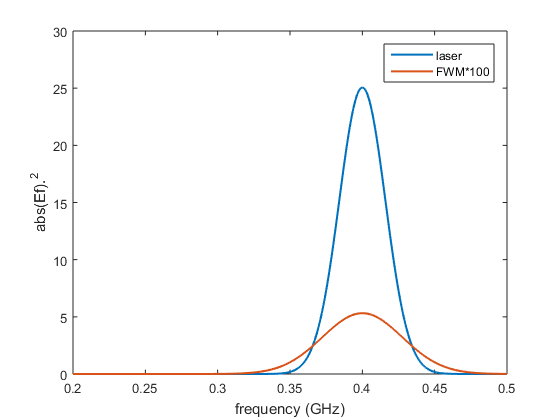

Example of four wave mixing simulation with LaserPulse class
Contents
New pulse in time domain
% pulse parameters n = 2^12; dt = 0.2; s = 10; t0 = 10; f0 = 0.4; % time array t = (-n/2:n/2-1).' * dt; % electric field Et = exp(-(t-t0).^2/s^2 -2i*pi*t*f0); % LaserPulse object p1 = LaserPulse(t, 'ns', Et); p1.normalize()
Four wave mixing
Combining the power and the complex conjugate operators it is possible to simulate many types of nonlinear signals.
The four-wave-mixing (FWM) signal is defined as:
pfwm = p1.^2 .* conj(p1);
Plot fields
figure(); plot(p1.frequencyArray,p1.spectralIntensity, ... pfwm.frequencyArray,pfwm.spectralIntensity*100); xlabel(['frequency (', p1.frequencyUnits, ')']); ylabel('abs(Ef).^2'); axis([0.2 0.5 0 30]) legend('laser', 'FWM*100');